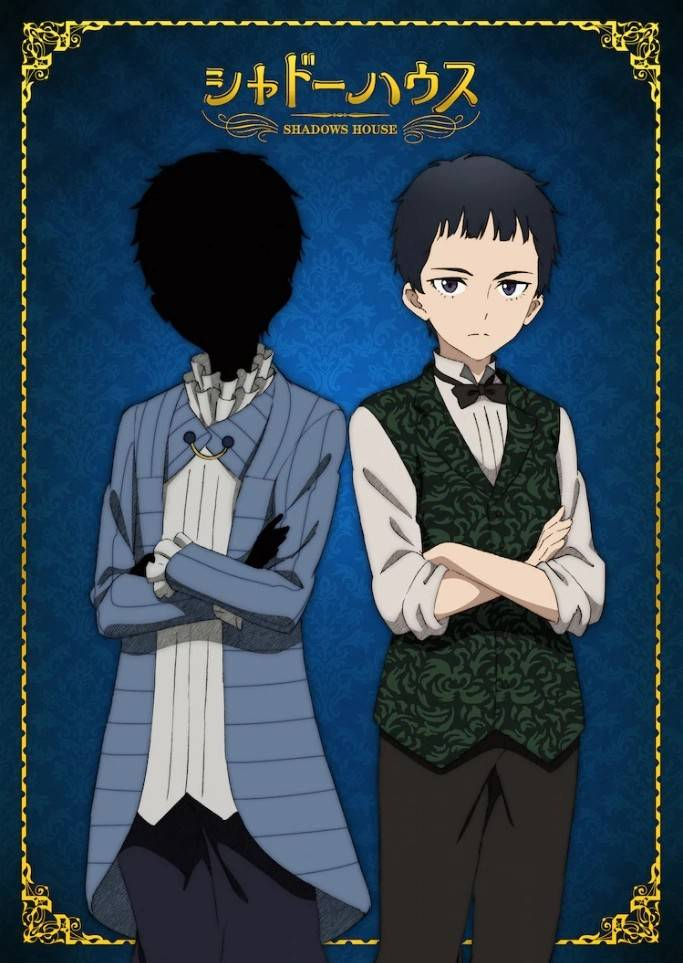

喬恩（ジョン，聲：酒井廣大）
影家人，尚恩的主人。和帕利克同一班，但彼此水火不容。穿著藍色西裝。自稱武鬥派，個性自由奔放且誠實，缺點是不擅長思考如果緊張會說大話。討厭吃胡蘿蔔。雖然不擅長動腦筋，但直覺很準確。對凱特一見鍾情並直接在凱特的面前求婚，並被凱特視為沒有常識的笨蛋，但實際上早在影精時期他就已經喜歡上凱特。喝咖啡就會醉。
黑灰量多，黑灰能力是將大量黑灰發射出去並摧毀路徑上的一切，但是射程僅為兩公尺。已被凱特告知影宅的真相，是最常協助凱特的行動的影家人。
尚恩（ショーン，聲：酒井廣大）
活人偶，喬恩的僕人，有著黑色的頭髮。性格溫和，且有正義感，缺點則是有時會固執己見。和利奇同班又同期，但彼此水火不容。視力不好，需要戴眼鏡才能看清近物，有著淵博的知識，聽力與嗅覺都很好，力氣也很大，做事很得要領。已被凱特告知影宅的真相並解除洗腦，經常和主人一起協助凱特。喜歡艾蜜莉可。
人類時期的名字是喬恩，影宅的領地「鏡邊村」出身，和利奇、露、拉姆是同學。當時戴眼鏡，但進入影宅前為了給選拔官留下好印象而不戴眼鏡。因為需要照顧年幼弟妹的原因直到快要超過加入影宅的最高許可年齡（13歲）時才加入。
回到主頁